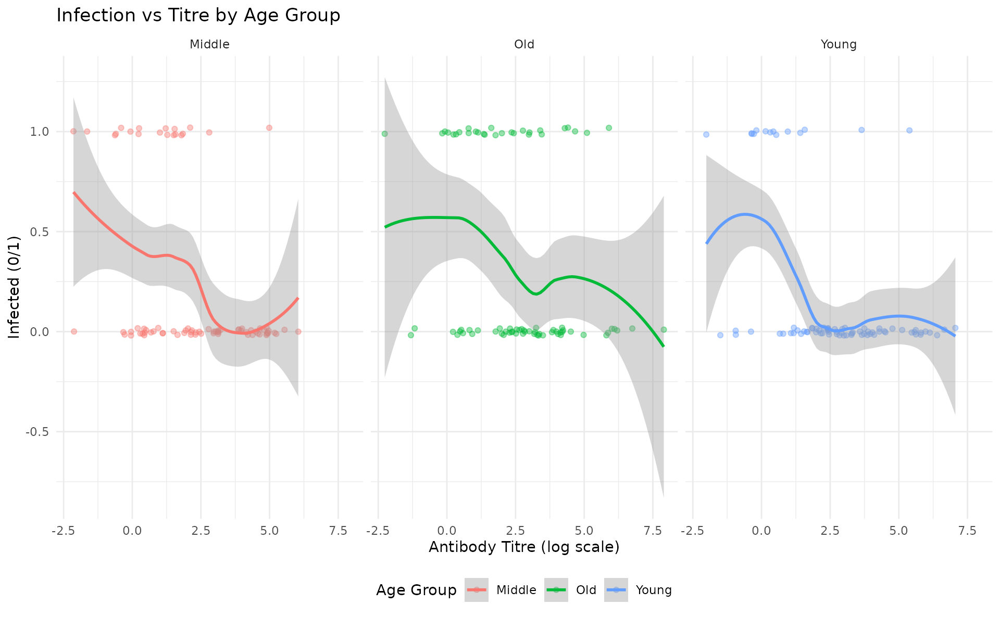
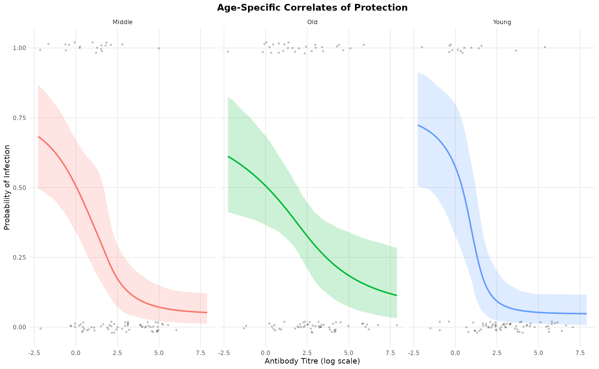
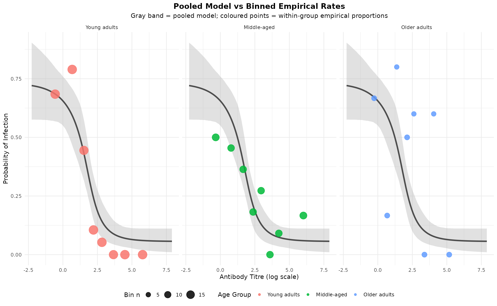

vignettes/hierarchical-groups.Rmd
hierarchical-groups.RmdThis vignette demonstrates how to use hierarchical modeling in
SeroCOP to account for group-level heterogeneity in
correlates of protection. This is particularly useful when different
subpopulations (e.g., age groups, geographic regions, or vaccine types)
may have different dose-response relationships.
Hierarchical modeling is appropriate when:
We’ll demonstrate with a realistic scenario where antibody titre is a correlate of protection, but the strength of this relationship varies by age group:
This reflects real-world phenomena where immune responses may differ by age.
We’ll create data for three age groups with different correlate of protection relationships:
n_per_group <- 80 # Sample size per age group
# Function to simulate data for one age group
simulate_group <- function(n, group_name, slope, ec50) {
# Generate antibody titres
titre <- rnorm(n, mean = 2.5, sd = 2.0)
# Calculate infection probability using the logistic model
# floor = 0.05, ceiling = 0.70
floor <- 0.05
ceiling <- 0.70
logit_part <- 1 / (1 + exp(slope * (titre - ec50)))
prob_infection <- ceiling * (logit_part * (1 - floor) + floor)
# Generate infection outcomes
infected <- rbinom(n, 1, prob_infection)
return(data.frame(
titre = titre,
infected = infected,
age_group = group_name
))
}
# Simulate three age groups with different CoP strengths
# Note: Higher slope values mean steeper curves (stronger correlate)
young <- simulate_group(n_per_group, "Young", slope = 3.0, ec50 = 1.5)
middle <- simulate_group(n_per_group, "Middle", slope = 1.5, ec50 = 1.8)
old <- simulate_group(n_per_group, "Old", slope = 0.3, ec50 = 2.0)
# Combine all groups
all_data <- rbind(young, middle, old)
cat(sprintf("Simulated data with age-specific correlates:\n"))
#> Simulated data with age-specific correlates:
cat(sprintf(" Young (n=%d): slope=3.0, ec50=1.5 (steep - strong protection)\n", n_per_group))
#> Young (n=80): slope=3.0, ec50=1.5 (steep - strong protection)
cat(sprintf(" Middle (n=%d): slope=1.5, ec50=1.8 (moderate protection)\n", n_per_group))
#> Middle (n=80): slope=1.5, ec50=1.8 (moderate protection)
cat(sprintf(" Old (n=%d): slope=0.3, ec50=2.0 (flat - weak correlate)\n", n_per_group))
#> Old (n=80): slope=0.3, ec50=2.0 (flat - weak correlate)
cat(sprintf("\nTotal sample size: %d\n", nrow(all_data)))
#>
#> Total sample size: 240
cat(sprintf("Overall infection rate: %.1f%%\n", 100 * mean(all_data$infected)))
#> Overall infection rate: 25.4%Let’s visualize the raw data:
ggplot(all_data, aes(x = titre, y = infected, color = age_group)) +
geom_point(alpha = 0.4, position = position_jitter(height = 0.02)) +
geom_smooth(method = "loess", se = TRUE, linewidth = 1) +
facet_wrap(~age_group) +
labs(
title = "Infection vs Titre by Age Group",
x = "Antibody Titre (log scale)",
y = "Infected (0/1)",
color = "Age Group"
) +
theme_minimal() +
theme(legend.position = "bottom")
Now we’ll fit a hierarchical model that estimates group-specific slopes and EC50 values while sharing information across groups:
# Create SeroCOP object with group variable
hier_model <- SeroCOP$new(
titre = all_data$titre,
infected = all_data$infected,
group = all_data$age_group # Add group variable for hierarchical modeling
)
# Fit the hierarchical model
hier_model$fit_model(
chains = 4,
iter = 2000,
warmup = 1000,
cores = 4,
refresh = 0
)
cat("✓ Hierarchical model fitted successfully!\n")
#> ✓ Hierarchical model fitted successfully!The hierarchical model estimates both population-level parameters and group-specific deviations:
# Extract group-specific estimates
group_params <- hier_model$extract_group_parameters()
print(group_params)
#> group parameter mean median sd q025 q975
#> 1 Middle ec50 0.6655970 0.6314611 0.8188243 -0.93936907 2.222687
#> 2 Middle slope 1.1869451 0.8854845 1.1705268 0.41918349 4.168349
#> 3 Old ec50 1.1860790 1.1489617 1.2980409 -1.64254551 3.890460
#> 4 Old slope 0.5365246 0.3958558 0.6187756 0.07937568 2.210292
#> 5 Young ec50 0.6235339 0.7308970 0.6547243 -0.91529456 1.627658
#> 6 Young slope 2.2283638 1.8292845 1.5514246 0.55463288 5.916504The table shows:
Notice how: - Young group has the most negative (steepest) slope - Old group has a slope near zero (flat relationship) - Middle group is intermediate
We can plot the fitted curves for each group:
hier_model$plot_group_curves(title = "Age-Specific Correlates of Protection")
The plot shows:
Let’s fit a standard (non-hierarchical) model that ignores age groups and see how it compares:
# Fit without group variable (pooled model)
pooled_model <- SeroCOP$new(
titre = all_data$titre,
infected = all_data$infected
)
pooled_model$fit_model(
chains = 4,
iter = 2000,
warmup = 1000,
cores = 4,
refresh = 0
)
cat("✓ Non-hierarchical (pooled) model fitted successfully!\n")
#> ✓ Non-hierarchical (pooled) model fitted successfully!We can use Leave-One-Out Cross-Validation (LOO-CV) to compare model fit:
# Extract LOO estimates
hier_loo <- hier_model$loo$estimates["elpd_loo", c("Estimate", "SE")]
pooled_loo <- pooled_model$loo$estimates["elpd_loo", c("Estimate", "SE")]
# Calculate difference
loo_diff <- hier_loo["Estimate"] - pooled_loo["Estimate"]
loo_se <- sqrt(hier_loo["SE"]^2 + pooled_loo["SE"]^2)
cat("\n=== Model Comparison (LOO-CV) ===\n")
#>
#> === Model Comparison (LOO-CV) ===
cat(sprintf("Hierarchical model ELPD: %.2f (SE: %.2f)\n",
hier_loo["Estimate"], hier_loo["SE"]))
#> Hierarchical model ELPD: -119.85 (SE: 8.37)
cat(sprintf("Pooled model ELPD: %.2f (SE: %.2f)\n",
pooled_loo["Estimate"], pooled_loo["SE"]))
#> Pooled model ELPD: -123.04 (SE: 8.24)
cat(sprintf("\nDifference: %.2f (SE: %.2f)\n", loo_diff, loo_se))
#>
#> Difference: 3.19 (SE: 11.74)
cat(sprintf("Z-score: %.2f\n", loo_diff / loo_se))
#> Z-score: 0.27
if (loo_diff > 2 * loo_se) {
cat("\n✓ Strong evidence favoring hierarchical model\n")
} else if (loo_diff > 0) {
cat("\n→ Hierarchical model preferred but evidence is weak\n")
} else {
cat("\n→ No clear advantage for hierarchical model\n")
}
#>
#> → Hierarchical model preferred but evidence is weakA positive difference indicates the hierarchical model fits better. The Z-score helps assess the strength of evidence (|Z| > 2 suggests strong evidence).
Let’s compare the two approaches visually:
# For the pooled model, get predictions across the titre range
titre_grid <- seq(min(all_data$titre), max(all_data$titre), length.out = 100)
pooled_pred <- pooled_model$predict(newdata = titre_grid)
pooled_mean <- colMeans(pooled_pred)
pooled_lower <- apply(pooled_pred, 2, quantile, probs = 0.025)
pooled_upper <- apply(pooled_pred, 2, quantile, probs = 0.975)
# Create a simple comparison plot showing pooled model vs observed data by group
pooled_df <- data.frame(
titre = titre_grid,
prob = pooled_mean,
lower = pooled_lower,
upper = pooled_upper
)
ggplot() +
geom_ribbon(data = pooled_df,
aes(x = titre, ymin = lower, ymax = upper),
fill = "gray", alpha = 0.3) +
geom_line(data = pooled_df,
aes(x = titre, y = prob),
color = "gray30", linewidth = 1.2) +
geom_point(data = all_data,
aes(x = titre, y = infected, color = age_group),
alpha = 0.4, size = 1.5,
position = position_jitter(height = 0.02)) +
geom_smooth(data = all_data,
aes(x = titre, y = infected, color = age_group),
method = "loess", se = FALSE, linewidth = 1) +
facet_wrap(~age_group) +
labs(
title = "Pooled Model vs Age-Specific Data",
subtitle = "Gray line = pooled model (same for all groups); Colored lines = observed LOESS fits",
x = "Antibody Titre (log scale)",
y = "Probability of Infection",
color = "Age Group"
) +
theme_minimal() +
theme(legend.position = "bottom")
Note how: - The pooled model (gray line) uses the same curve for all age groups, ignoring heterogeneity - The observed patterns (colored LOESS curves) show clear age-specific differences - The hierarchical model (shown in the previous plot) captures these group-specific relationships - The pooled approach misses important variation, particularly the flat relationship in older adults
The hierarchical model uses random intercepts on the
ec50 and slope parameters:
ec50 ~ 1 + (1 | group)
slope ~ 1 + (1 | group)This means: - Each group gets its own ec50 and
slope value - Group-specific values are drawn from a common
distribution - The model estimates both the population mean and
group-level variance
Hierarchical modeling in SeroCOP provides a powerful
framework for analyzing correlates of protection when you expect
heterogeneity across groups. The approach:
group
parameterThis is particularly valuable in real-world scenarios where immune responses vary by demographics, vaccine types, or other grouping factors.
sessionInfo()
#> R version 4.5.2 (2025-10-31)
#> Platform: x86_64-pc-linux-gnu
#> Running under: Ubuntu 24.04.3 LTS
#>
#> Matrix products: default
#> BLAS: /usr/lib/x86_64-linux-gnu/openblas-pthread/libblas.so.3
#> LAPACK: /usr/lib/x86_64-linux-gnu/openblas-pthread/libopenblasp-r0.3.26.so; LAPACK version 3.12.0
#>
#> locale:
#> [1] LC_CTYPE=C.UTF-8 LC_NUMERIC=C LC_TIME=C.UTF-8
#> [4] LC_COLLATE=C.UTF-8 LC_MONETARY=C.UTF-8 LC_MESSAGES=C.UTF-8
#> [7] LC_PAPER=C.UTF-8 LC_NAME=C LC_ADDRESS=C
#> [10] LC_TELEPHONE=C LC_MEASUREMENT=C.UTF-8 LC_IDENTIFICATION=C
#>
#> time zone: UTC
#> tzcode source: system (glibc)
#>
#> attached base packages:
#> [1] stats graphics grDevices utils datasets methods base
#>
#> other attached packages:
#> [1] ggplot2_4.0.1 seroCOP_0.1.0
#>
#> loaded via a namespace (and not attached):
#> [1] gtable_0.3.6 tensorA_0.36.2.1 xfun_0.54
#> [4] bslib_0.9.0 QuickJSR_1.8.1 processx_3.8.6
#> [7] inline_0.3.21 lattice_0.22-7 callr_3.7.6
#> [10] ps_1.9.1 vctrs_0.6.5 tools_4.5.2
#> [13] generics_0.1.4 stats4_4.5.2 parallel_4.5.2
#> [16] tibble_3.3.0 pkgconfig_2.0.3 brms_2.23.0
#> [19] Matrix_1.7-4 checkmate_2.3.3 RColorBrewer_1.1-3
#> [22] S7_0.2.1 desc_1.4.3 distributional_0.5.0
#> [25] RcppParallel_5.1.11-1 lifecycle_1.0.4 compiler_4.5.2
#> [28] farver_2.1.2 stringr_1.6.0 textshaping_1.0.4
#> [31] Brobdingnag_1.2-9 codetools_0.2-20 htmltools_0.5.8.1
#> [34] sass_0.4.10 bayesplot_1.14.0 yaml_2.3.11
#> [37] pillar_1.11.1 pkgdown_2.2.0 jquerylib_0.1.4
#> [40] cachem_1.1.0 StanHeaders_2.32.10 bridgesampling_1.2-1
#> [43] abind_1.4-8 nlme_3.1-168 posterior_1.6.1
#> [46] rstan_2.32.7 tidyselect_1.2.1 digest_0.6.39
#> [49] mvtnorm_1.3-3 stringi_1.8.7 dplyr_1.1.4
#> [52] labeling_0.4.3 splines_4.5.2 fastmap_1.2.0
#> [55] grid_4.5.2 cli_3.6.5 magrittr_2.0.4
#> [58] loo_2.8.0 pkgbuild_1.4.8 withr_3.0.2
#> [61] scales_1.4.0 backports_1.5.0 rmarkdown_2.30
#> [64] matrixStats_1.5.0 gridExtra_2.3 ragg_1.5.0
#> [67] coda_0.19-4.1 evaluate_1.0.5 knitr_1.50
#> [70] mgcv_1.9-3 rstantools_2.5.0 rlang_1.1.6
#> [73] Rcpp_1.1.0 glue_1.8.0 jsonlite_2.0.0
#> [76] R6_2.6.1 systemfonts_1.3.1 fs_1.6.6